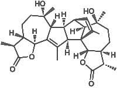
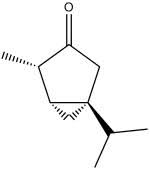
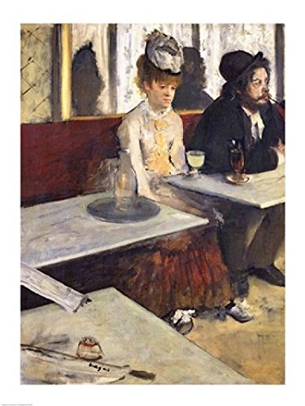

E' incredibile come la mente possa, partendo da uno stimolo qualsiasi, mettersi a girovagare in un milione di agganci, solo con un po', diciamo così, di "predisposizione".
Mi è capitato qualche giorno fa di passeggiare lungo una amena stradicciola, immersa a sua volta in un alrettanto piacevole ambiente collinare e vedere, guarda là, un bel gruppo di argentee pianticelle di Artemisia Absinthium.
Come si sa, quest'erba era la fondamentale materia prima per la produzione del famoso liquore Absinthe (Assenzio), tanto caro agli intellettuali del decadentismo francese di fine ottocento ed ai pittori di quel periodo, e mi permette di giustificare l'apparentemente incongrua associazione tra il famoso pittore delle ballerine e la mia passeggiata in collina.
Ho preso una pianticella piccolina e l'ho trapiantata provvisoriamente in un vaso, in attesa di più consona collocazione nel giardino di casa: ecco la foto:

Sull'assenzio ci sarebbe da scrivere fin che si vuole, sia per quanto riguarda la medicina popolare che sul famoso liquore bohemienne, ma non voglio ripetere cose già note e rimando a questi soli due link, che mi sembrano esaustivi quanto basta e fatti bene link1 e link2.
Assaggiare una foglietta di assenzio non è per niente piacevole (naturalmente ho provato di persona) perchè contiene una sostanza dalle positive caratteristiche antiinfiammatorie ma che è amarissima: l'absintina; mia nonna materna, che nulla sapeva di chimica ma che di decotti orrendi se ne intendeva, aveva ragione, il gusto è veramente orribile!
Ecco la formula di questa sostanza, sintetizzata in laboratorio solo nel 2004;

per pura curiosità e a mio rischio e pericolo metto pure il nome ufficiale IUPAC:
(1R,2R,5S,8S,9S,12S,13R,14S,15S,16R,17S,20S,21S,24S)-12,17-dihydroxy-3,8,12,17,21,25-hexamethyl-6,23-dioxaheptacyclo[13.9.2.0 1,16.02,14.04,13.05,9.020,24]hexacosa-3,25-diene-7,22-dione
Bello e semplice, vero?
Oltre all'absintina, l'assenzio contiene il famoso tujone

che, a torto o a ragione ha decretato innanzitutto la messa fuori legge del liquore per quasi un centinaio d'anni, e poi, passata la moda bohemienne, la sua rapida autoestinzione già dai primi anni del '900.
Questo chetone terpenoide è stato demonizzato come il responsabile del degrado umano di persone che sul finire del secolo XIX° erano preda sicuramente molto più dell'etanolo assunto in quantità da alcoolista impenitente che della misera quantità di tujone presente nella verde bottiglia della Pernod, se ci si fosse limitati ad un consumo "normale" senza arrivare ai limiti dell'assunzione cronica.
Come per ogni sostanza, prima di esprimere spicce considerazioni qualitative, approfondiamo l'argomento sulla tossicità della sostanza medesima dal punto di vista quantitativo (la DL50 e la quantità effettivamente ingerita sono i dati che contano!) e poi traiamone le personali conclusioni.
In ogni modo, forte della sua ormai inattaccabile fama "trasgressiva", il liquore all'assenzio ormai liberalizzato è tornato recentemente di moda in qualche locale un po' snob; anche vicino a casa mia c'è uno di quei pub, frequentati dagli amanti delle ore piccole, che sfoggia un cartello che furbescamente recita: "qui si serve l'assenzio originale...".
Quanto questo liquore sia simile a quello dell'originale scapigliatura parigina è tutto da verificare.
Ma anche se non lavorasse il tujone, ben lavora la suggestione durante le cerebrali procedure di preparazione della "trasgressiva" bevanda...
Per finire gustiamoci questa famosissima opera di Edgar Degas.

Qualche anno fa, al Museo d'Orsay avevo fatto le stesse arzigololate associazioni di idee di oggi, ma in senso inverso: dal quadro di Degas passavo al tujone e da questo all'artemisia; oggi, dalla pianticella passo al tujone, e da questo agli stralunati personaggi del quadro di Degas... tutto passeggiando qua e là in collina.